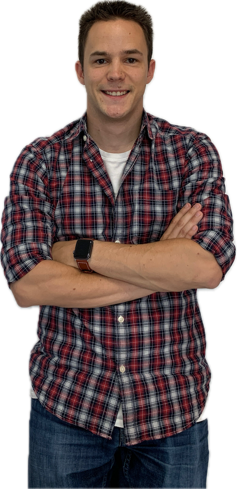
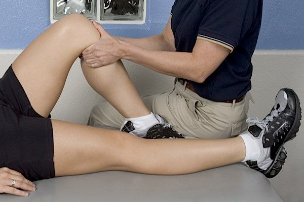

Une approche calme et appliquée pour un suivi de qualité.
Toute pratique physique et sportive comporte une part de risques. Une bonne rééducation vous permet d'éviter de nouveaux risques.
Formation en Kinésithérapie du sport et Return to Play - KINEAC Formation
La Clinique Du Coureur (Certifié) : 1.0, 1.1, 1.4, 1.6, 1.10
Formation en kinésithérapie du sport – Parnasse ISEI
Formation en Taping sportif – UCL, Louvain-la-Neuve
Formation en crochetage et Triggers Points - UCL, Louvain-la-Neuve
Thérapie par le mouvement d'un ensemble de techniques manuelles ou mécaniques permettant de faire disparaître un blocage.
Certified Mulligan Practitioner, Forthema.
Insertion d’aiguilles sèches pour relâcher un trigger point et traiter les syndromes myo-fasciaux (à ne pas confondre avec l’acupuncture).
Dry Needling Top 30 - David G Simons Academy
Dry Needling cours avancés quadrant supérieur et inférieur - David G Simons Academy
Certification Société Française de Dry Needling
Solution de traitement efficace contre les tendinopathies d’insertions, calcifications, triggers points, …

Des soins appropriés, une transparence par un franc parlé. L'énergie de la jeunesse, c'est un choix sur la durée.
Soins appliqués
Toujours joignable
Contact familial et professionel
Formation continue pour le suivi sportif (Taping, etc)
Disponible dans toute la commune de Rochefort (Ave-et-Auffe, Buissonville, Eprave, Han-sur-Lesse, Jemelle, Lavaux-Sainte-Anne, Lessive, Mont-Gauthier, Villers-sur-Lesse, Wavreille).
Votre traitement nécessiste un suivi chez vous, dans votre quotidien.

Si votre pathologie demande un travail dans un environnement controlé avec du matériel adapté.
Accueillant, appliqué et professionnel, tout ce que je recherchais comme kiné!
J’ai pu reprendre la compétition en toute confiance grâce à un suivi adapté à mon sport.
Adresse
Rue du Vélodrome 4/1,
5580 Jemelle
Contactez-moi
0474/43.30.75
lionel.evrard@icloud.com
Heures de consultations
8h à 19h en semaine